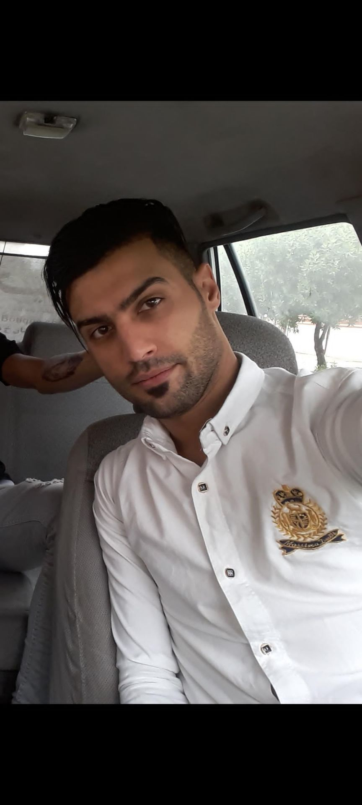
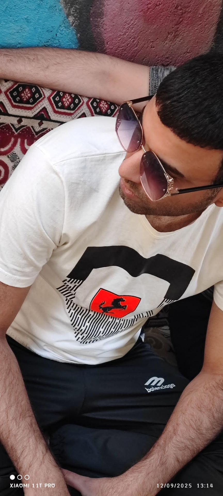
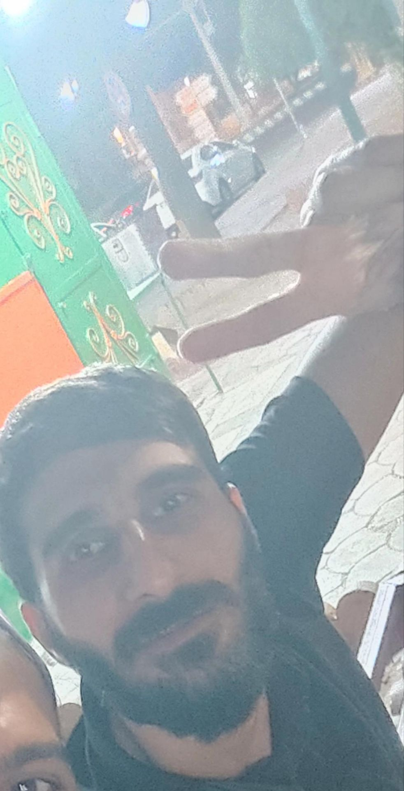

مهدی ایزن
کلیک کن برای دیدن جزئیات

ماجد ایزن
کلیک کن برای دیدن جزئیات

حسین سواری
کلیک کن برای دیدن جزئیات
کلیک کن برای دیدن جزئیات
کلیک کن برای دیدن جزئیات
کلیک کن برای دیدن جزئیات
یک فرد مومن که ی زمانی عضو اصحاب کهف بود ولی الان ترک کرده و شب و روزش شده پلی دادن با رها خانمش. بله این پلیر مدتهاست که فیفا پلی نداده.
این فرد فقط با پاریس میتونه بازی کنه، جونش برای امباپه درمیره. عشقش امباپس. بدون اون تیم فلجه! معروف به "مهدی چیپی" هست — فرقی نمیکنه دروازهبان توی گل باشه یا نه، چیپشو میزنه و گل میشه 😄
این چهره ماجد ایزن ملقب به ماجد زاویه، ماجد سر توپ و ماجد کاکیرو هست؛ یک فرد مومن، داداشمون تا ۱۲ ظهر کالاف میزنه، ۶ عصر بیدار میشه، انگار عضو اصحاب کهفه 😴 خلاصه مرد خوبیه 😄
زود اخلاقشو میبازه، عصبی بشه دسته رو پرت میکنه اونطرف 😆
یک فرد مانند ماجد؛ خواباشون با ساعت آمریکا تنظیمه. ایشونم عضو اصحاب کهفه 😴
این پلیر تو فیفا اگه دو گل بخوره، بازی خشن اونو مشاهده میکنیم 😈 تکلهای عصبی برای زود گرفتن توپ. اگه ببره هم همینطوره — نمیذاره حریف به گل نزدیک بشه! شعارش: توپ رد بشه ولی بازیکن نه 😤